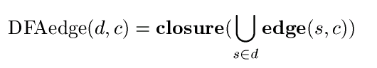

Autómaton Finito
- Un autómaton finito es equivalente a una Expresión Regular.
- Con la ventaja de ser implementable por una computadora.
- Un autómaton finito equivalente a una expresión regular reconoce el mismo lenguaje.
- En general, un autómaton finito reconoce un lenguaje regular.
Autómaton Finito
DFA vs NDFA
- DFA sólo puede tomar una ruta dado un estado y un símbolo.
- NDFA puede escoger entre varias rutas.
- DFA suelen ser más rápidos en su ejecución al no necesitar decisiones.
- NDFA suelen ser más pequeños (en cantidad de estados).
- Por lo tanto, 'preferimos' trabajar con DFA.
Convirtiendo un NDFA a DFA
Autómata finito
Cerradura ε
- La cerradura de un estado s es el conjunto de estados alcanzables desde s a través de transiciones ε, incluyendo s.
Ejemplo
Clausura de A ?
Arista DFA
Conjunto de estados del NFA alcanzables desde un subset de estados d consumiendo el símbolo c.
Ejemplo
aristaDFA({A, B, C, D, H, I}, 1) ?
Estados finales DFA
Conjunto de estados del DFA que contengan algún estado final del NDFA.
Algoritmo
1. Calcular la clausura del estado inicial del NDFA.
2. Calcular aristaDFA del estado inicial del DFA con cada símbolo del alfabeto.
3. Calcular aristaDFA para cada nuevo estado del DFA con cada símbolo del alfabeto.
Algoritmo
1. Calcular la clausura del estado inicial del NDFA.
2. Calcular aristaDFA del estado inicial del DFA con cada símbolo del alfabeto.
3. Calcular aristaDFA para cada nuevo estado del DFA con cada símbolo del alfabeto.
Ejemplo
Clausura de A?
Algoritmo
1. Calcular la clausura del estado inicial del NDFA.
2. Calcular aristaDFA del estado inicial del DFA con cada símbolo del alfabeto.
3. Calcular aristaDFA para cada nuevo estado del DFA con cada símbolo del alfabeto.